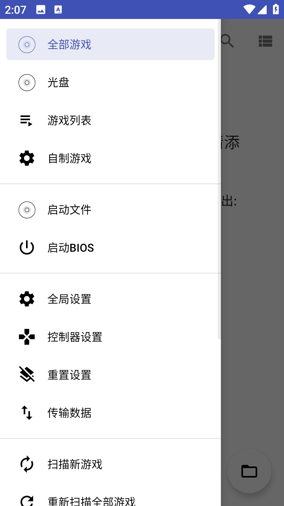

手机上玩 PS2 经典，从零开始 NetherSX2 上手全指南
还在怀念 PS2 时代的经典大作？NetherSX2 让你在手机上重温这些神作，五分钟从下载到跑通，看完就能上手。
如果你跟我一样，当年在 PS2 上泡过无数个周末——战神、GTA 圣安地列斯、GT 赛车、寂静岭……那些画面和音乐至今想起来还热血沸腾。但要把一台 PS2 搬去公司或者出门，显然不现实。好消息是，NetherSX2 能让这些经典直接在你的手机上跑起来。
这篇文章带你从完全不懂到用起来，不需要任何模拟器基础，跟着走就行。
它到底是干嘛的
说人话：NetherSX2 就是一个能在手机上模拟 PS2 硬件的软件——它的官网上也有完整的功能介绍。你可以把它想象成一个"超级翻译官"——PS2 游戏光盘里的代码和指令，它一条一条翻译成手机能看懂的语言，然后在手机屏幕上把游戏画面实时渲染出来。
它不是盗版工具，也不是什么灰色渠道的东西。模拟器本身在很多国家和地区都是合法的——你自己花钱买的正版游戏光盘，用软件转成镜像文件（ISO）存在手机上玩，是完全合理的个人使用。

五分钟上手：从安装到第一次跑通
别被"模拟器"这三个字吓到，整个流程真的就是五个步骤，每一步点几下就行。
第一步：下载安装
先装软件本体——打开官网找 NetherSX2 的安装包，或者直接从官方下载页面拿最新版 APK，装完会在桌面上出现一个类似 PS2 手柄图标的 App。装完别急着打开，还有两样东西得先准备好。
第二步：准备 BIOS 文件
BIOS 是模拟器的"启动引导程序"，就像电脑的 BIOS 一样，没有它模拟器启动不了。你需要从自己的正版 PS2 主机上导出 BIOS 文件（这个过程叫 dump，有专门的工具），然后把导出的 .bin 文件拷到手机的 NetherSX2/bios 目录下。
如果你没有 PS2 实体机，有些网站提供合法的 BIOS 下载（模拟器附带的不算，那是侵权的）——这个部分我不多说，自己找靠谱的来源就行。
第三步：准备游戏镜像
有了 BIOS，还得有游戏。PS2 游戏光盘的镜像文件有好几种格式，等下我会专门讲为什么推荐 CHD，这里先说：你把光盘用电脑软件做成 ISO 或者 CHD 格式的文件，拷到手机上就行，放哪儿都行，后面在模拟器里可以浏览定位。
第四步：打开模拟器，导入游戏
第一次打开 NetherSX2，它会让你确认 BIOS 文件——找到刚才放的 .bin 选上，模拟器就初始化完成了。然后你会看到一个空的游戏列表界面，点右上角的"添加游戏目录"，选你放游戏镜像的那个文件夹，它会自动扫描里面所有能识别的文件。

第五步：点图标，开玩
扫描完之后，每个游戏会显示封面图和名字，点一下就启动了。第一次启动某个游戏可能会慢个几秒（它在加载 GameDB 的补丁），之后再进就是秒开。画面和手感跟当年在 PS2 上几乎一模一样——不对，甚至更好，因为手机屏幕更高清。
就这五步，五分钟搞定。
上手后先玩这三个功能
跑通了不等于玩好了。NetherSX2 有几个核心设置，调好了能让你的体验直接上一个台阶。
1. 把游戏转成 CHD 格式——省空间还更稳
你可能发现，一个 PS2 游戏的 ISO 文件动不动就是 4~6GB，手机存储吃紧。这时候试试 CHD 格式——它是 MAME 项目维护的开放压缩格式，无损压缩的同时体积能比 ISO 小 40%~55%。
什么意思？就是一个 5GB 的 ISO 转成 CHD 之后大概 2.5~3GB，画质音轨丝毫不差。而且 NetherSX2 原生支持 .chd 文件，不需要预解压，直接识别。
转换也很简单：在电脑上装个 CHDMAN 工具（MAME 官方出的命令行小工具），一条命令 chdman createcd -i input.iso -o output.chd 就搞定。建议所有游戏都转成 CHD 再传到手机，以后管理起来也方便。
2. 画面出问题了？先切渲染器再调补丁
玩的时候如果遇到画面故障——比如某些东西变成全白、镜头一转纹理开始闪、物体变形拉成奇怪形状、或者直接花屏——别慌，这不是游戏坏了，90% 的情况切一下渲染器就能解决。
NetherSX2 支持 Vulkan 和 OpenGL 两种渲染后端，打开游戏暂停 → 渲染后端，在这两个之间切换试试。如果切了还不行，第二常见的原因是宽屏补丁有 bug，关掉宽屏补丁回到 4:3 原始比例试试。
再不行的话，把 VU Stealing（速度黑客的一档）降到 0，排除这个干扰项。还是有问题？最后把内部分辨率降到 1x，排除显存不够的问题。这一套排查下来，基本没有解决不了的画面故障——更细的纹理修复和渲染路径对比，NetherSX2文档里讲得更全。
3. VU Cycle Stealing——用一点点副作用换帧率提升
这是个进阶调参，但效果立竿见影。简单说，PS2 的 VU 是处理实时图形计算的协处理器，VU Cycle Stealing（VU 偷帧深度） 就是让模拟器跳过一部分非关键的 VU 计算，以此换取更高的帧率。
它有 0~3 四个档位，每升一档帧率会涨 5~10 FPS，但可能带来爆音、动画不连贯等副作用。经验值：大部分游戏用 2 档是收益和副作用的最佳平衡点。像 GT 赛车 4、旺达与巨像这种 CPU 特别敏感的游戏，2 档配合 EE Cycle Rate 调到 120%，帧率能从 45~55 FPS 直接涨到 60~70 FPS，而且副作用（起步轻微爆音）基本可以忽略。
战神 2 这种代码优化好的游戏，甚至可以开 3 档，副作用最轻。但旺达就别开 3 档了——虽然帧率再涨 4 FPS，但巨像的骨骼动画会变得明显不连贯，严重破坏这个游戏的沉浸感。
小白的三个常见疑问
Q：画面花屏、有彩色方块怎么办？
按我上面说的排查顺序来：先切渲染器（Vulkan ↔ OpenGL）→ 再关宽屏补丁 → 把 VU Stealing 降到 0 → 降低分辨率到 1x。99% 的情况到第二步就解决了。如果全部试完还有问题，可以在设置里切换到"软件渲染"模式，它用 CPU 完全模拟 PS2 的图形管线——但帧率会暴跌到 10~20，只用于验证问题，不适合长期玩。
Q：我应该先玩哪些游戏？
好消息是 PS2 上有一堆神作，而且大部分在 NetherSX2 上表现完美。动作冒险类的战神 1/2、旺达与巨像、寂静岭 2、潜龙谍影 3；开放世界的 GTA 圣安地列斯；竞速类的 GT 赛车 4；RPG 的最终幻想 X 和 XII；格斗类的铁拳 5——这些都是已知完美兼容的，GameDB 自带宽屏补丁，直接导入就能玩。具体每款游戏的表现和推荐设置，可以去文档站查兼容性清单。
Q：为什么不直接用 ISO 非要转 CHD？
三个理由：体积小一半（无损！）、原生支持不用解压、开放格式长期可靠。ISO 是标准光盘镜像，一个游戏 4~8GB，CHD 压缩后 1.5~4GB。而且 CHD 是 MAME 维护的开放格式，不像某些私有压缩格式那样偶尔会读出问题。花 30 秒转一下，手机存储省出好几个 G，值。
写在最后
NetherSX2 不是那种需要折腾一下午才能跑通的模拟器——跟着五分钟上手流程走，大概率一次成功。它最大的价值是把 PS2 那堆"当年因为主机搬不动所以没通关"的经典，重新带回你口袋里。
如果你跑通了战神 2 之后想再挖深一点——比如想调更多参数、或者搞清楚 GameDB 补丁是怎么回事——去翻一下 NetherSX2 的文档，里面有完整的参数说明和每个游戏的专属推荐设置。祝你在手机上的 PS2 之旅玩得开心。
顺带提一下，这套资料我同步到了三个代码仓库，国内访问不稳的时候可以换 Gitee 或 GitCode 备份源：GitHub、Gitee、GitCode，直接搜项目名就能找到。